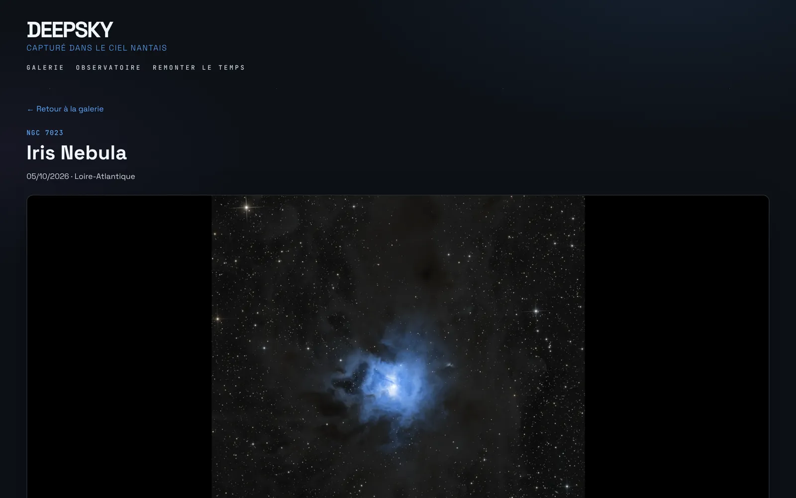

Galerie et fiches photo
Filtres par type d’objet, constellation, année et matériel. Chaque fiche détaille les sessions d’acquisition, les filtres, le matériel, la version starless et les annotations astrométriques : les objets du champ sont identifiés automatiquement par Astrometry.net.
- Plate solving et annotations du champ
- Distances SIMBAD de l’objet et de tout le champ
- Comparaison des versions d’une même cible
- Pleine résolution, partage et likes
